v4-hud-instrument-v1
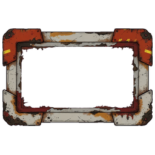
Bone/rust open rectangle with quiet opening. Corrected margin passes. Source is compact rather than 4:1; fixed-corner runtime expansion supplies the wide instrument. No text or directional shadow.
Technical selection only. Owner readability and taste pending. The 96 px sheet is literal scale.
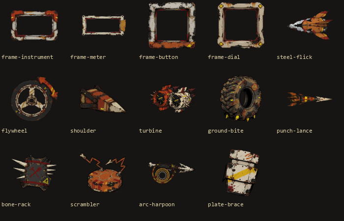

Bone/rust open rectangle with quiet opening. Corrected margin passes. Source is compact rather than 4:1; fixed-corner runtime expansion supplies the wide instrument. No text or directional shadow.
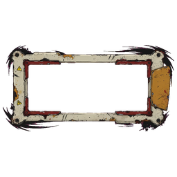
Thin bone rim, rust inner edge and ochre end cap. Empty measured opening supports authoritative linear fill. Compact source expands through fixed corners; no generated ticks or numbers.
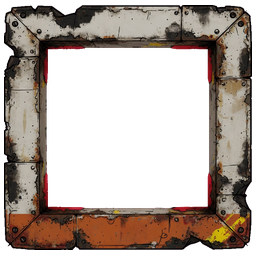
Broad square bone plates, rust lower edge and dark worn seams; transparent centre stays empty for a live label. Corner wear is sparse enough for a small control.
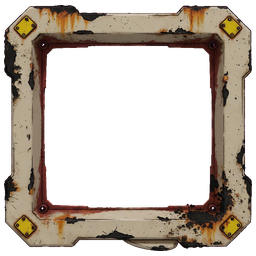
Bone square bezel and four hazard-yellow corner anchors. Large empty centre suits the countdown and exact procedural minimap. No numeric gauge baked into art.
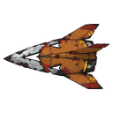
Sharp silver arrowhead with compact attached ochre fins; clear dash silhouette. Local Qwen calls it aircraft-like and flags forbidden details, but direct inspection finds no lettering/brand or occupant. Retain that disagreement; use only as a labelled HUD dash symbol, not a car sprite.
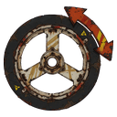
Three-spoke wheel with attached curved forward arrow; recognisable circular silhouette and bone/ochre roles. No lettering or external shadow.
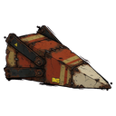
Chunky plated triangular ram with a broad bone nose and rust shoulder bracing. Repaired margins pass; mass reads distinctly from the thin lance.
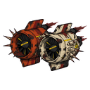
Paired large intake fans with attached exhaust structures, clear twin circular silhouette. Third source restores safe margins; tiny blade detail is decorative. Actual size and prompt compliance remain separate from model confidence.
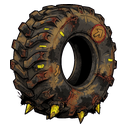
Large treaded tyre, small earth teeth attached below. Dark inner void preserves the tyre read on the soot backing; label explains grip, no colour-only meaning.
Long narrow pointed mechanical lance with compact rust breech; clean single-line silhouette. Repaired complete margins pass. Label differentiates its ranged role from other arrows.
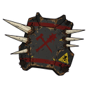
Central dark plate with THREE bone spikes on BOTH left and right. Third source corrects clipping while preserving bilateral contact identity. Red X-shaped paint scratches are not lettering; no gore or detached bones.
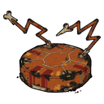
Squat transmitter puck with two zigzag antenna arms; wider round silhouette distinct from the flywheel. Fine circuitry is decorative; name/state remain live text.
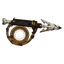
Barbed bone point on a rail with a large circular coiled tether and pale contained energy line. Complete safe margins after correction; no detached lightning or ground glow.
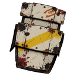
Three overlapping broad bone armour plates, dark seams and rivets. Bold slab silhouette distinguishes defence from engine icons; hazard band is pigment, no text.